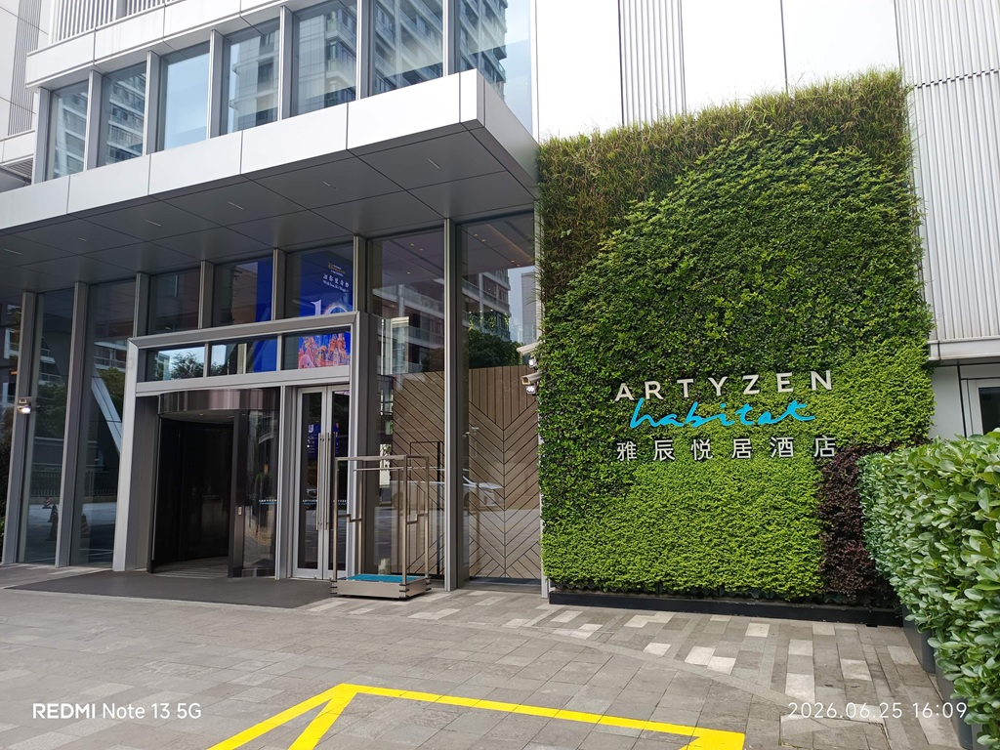
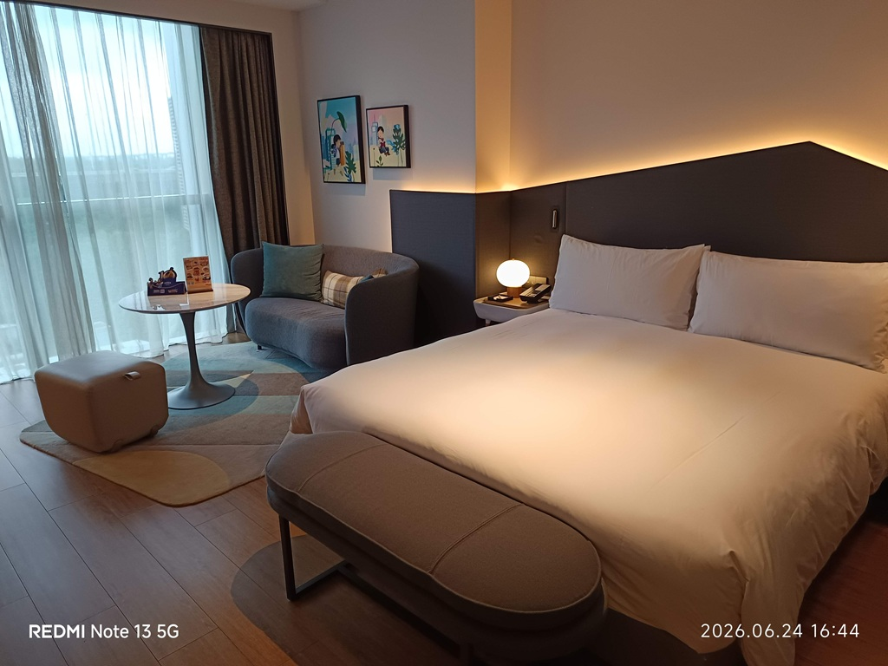
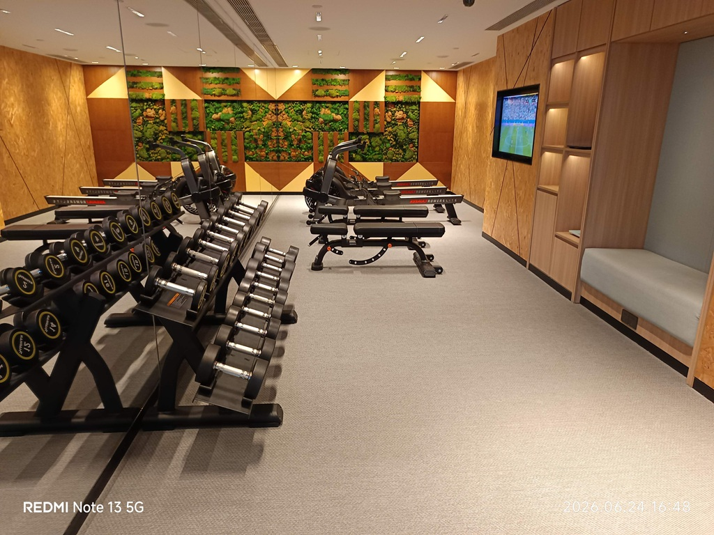
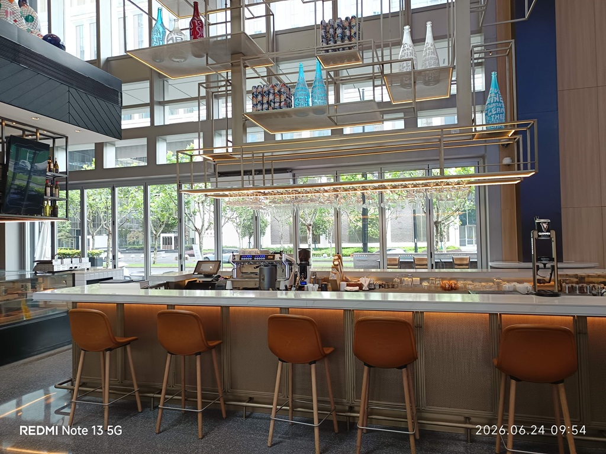
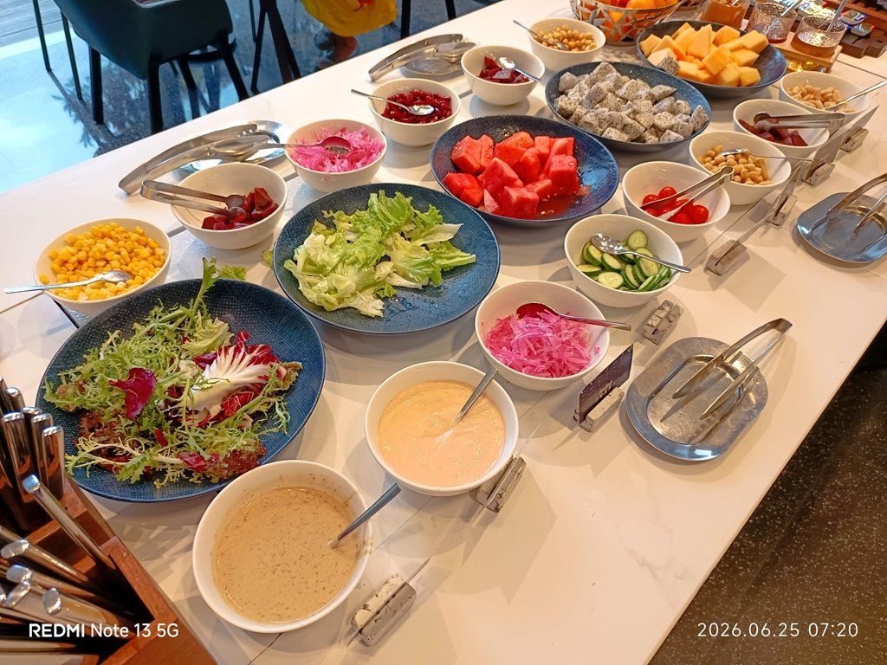

藝術設計與社區共融的旅宿美學
前灘雅辰酒店與雅辰悅居酒店相鄰而立，坐落於上海最富朝氣的前灘商圈。這裡不單是商務與度假的棲息地，更是一個連接藝術、工作、社交與在地生活的社區樞紐。
我們將「藝術居所」的概念具體化。31酒店由著名設計事務所如恩設計 (Neri&Hu) 親自操刀，將侘寂美學融入鋼筋水泥，打造溫潤、具有故事感的幾何空間；而悅居酒店則專注於「共享生活」，配備精緻小廚房、24小時自助洗烘，為您營造像家一般的自在氛圍。
如恩侘寂美學
以木質、磚石與柔光，演繹極致質樸美感。
思方匯社交圈
開放式共享餐飲空間，打破鄰里與旅人邊界。
前灘31 & 雅辰悅居
「居住、工作、社交、休閒」的完美重疊，為生活細節賦予藝術儀式感。
兩天一夜．雅辰時光印記
順著時間的流動，在雅辰細讀每一個為您量身打造的舒心細節。

第一天：踏入設計藝境
步入上海前灘雅辰，挑高的木質結構大堂瞬間隔絕了外界的嘈雜。溫暖的光影折射在精緻的磚瓦與幾何裝飾上，大堂貼心的服務與溫暖氛圍，讓抵達即是放鬆的起點。

舒適愜意的私人綠洲
打開客房，極簡侘寂設計與質樸木質色調令人洗去疲憊。房間內精挑細選的藝術品、柔軟親膚的床品、寬大明亮的落地窗，為您營造像家一般的自在氛圍。

健身房
來到飯店的健身房，使用優質的設備，完成心肺及重量訓練。

思方匯 Bistro 舌尖饗宴
夜幕低垂，在思方匯享用主廚團隊傾心打造的儀式感晚餐。經典歐陸盤餐融入東方元素，精緻的色澤與絕佳火候呈現出非凡的味覺體驗，小酒吧同時也獻上放鬆的飲料。

晨光灑落的元氣朝食
在晨光中醒來，前往餐廳享用健康的自助早餐。手作現煎雞蛋、焦脆培根時蔬、香甜麵包與現磨熱咖啡，讓早晨盈滿幸福的溫度。

午後露台與夏日特調
退房前，在思方匯點一杯主廚特調夏日冰飲。靜坐在充滿藝術氛圍的休憩沙發上，在悠然與果香特調中，為這段精緻的雅辰美學生活劃下完美句點。
思方匯：都會鄰里的客廳
打破傳統酒店餐飲的刻板邊界，集「輕食、咖啡、酒吧、工作、社交」於一體。開放通透的玻璃格柵，引入明亮採光。

豐盛寰宇自助早餐
思方匯全日制餐廳的早餐餐檯乾淨雅致，擺滿了各式香氣四溢的德式與法式烘焙麵包、新鮮水果優格、現切冷盤煙燻肉類與芝士，為旅人提供無懈可擊的寰宇美食饗宴。
靈動的工作與社交樞紐
思方匯不僅是餐廳，更是一個共享的「鄰里客廳」。住客與周邊的商務人士在此用咖啡交談，或是點份精緻輕食度過休閒午後，在開放靈活的空間中找到最舒服的社交姿態。
雅辰時光相簿
精選 11 張代表性照片，邀您一同細細品味前灘雅辰的生活藝境。

大堂登記入住
Day 1 - 09:54

共享客廳休憩長檯
Day 1 - 10:01

設計感質感客房
Day 1 - 16:31

精緻衛浴設計
Day 1 - 16:44

城市天際線暮景
Day 1 - 16:48

思方匯精緻晚宴
Day 1 - 18:30

酒吧微醺特調
Day 1 - 19:08
思方匯自助冷盤
Day 2 - 07:20

晨光元氣朝食
Day 2 - 07:30
午後簡餐特調
Day 2 - 13:21

旅程圓滿收尾
Day 2 - 16:08